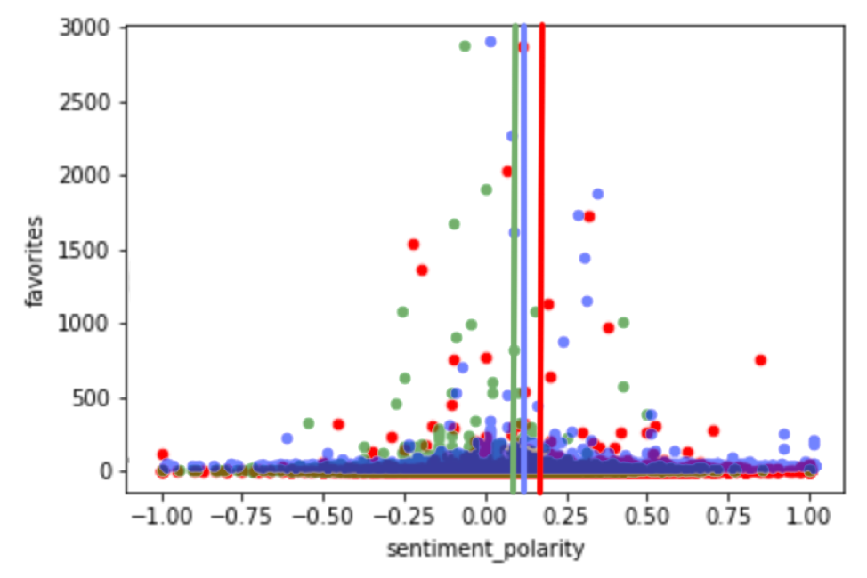

I create solutions to speed up your processes.
I'm an aspiring technology professional looking to apply my recently-acquired Bachelor of Computer Information Systems and over two years of Systems Analysis experience.
Below are samples of my programming work including:If you have any questions about my work, please see my contact information below or connect with me on LinkedIn.
Click here for the repository.
Prosfera is a donation management Android application designed for charities to keep track and promote the donations to serve people in need.
My team and I created this app for our Software Engineering class. My role in the team was primarily Scrum Master as well as developer.
My largest programming contributions can be found in my repository in the RecyclerViewAdapter, BasketItemList, and the GiftBasket classes.
What I learned:
The biggest challenges I faced were managing the group's limited time with our expectations of the final product and resolving conflicts between team members. I was able to solve these issues with constant communication, as per Agile practices, and providing support with empathy to team members.
Click here for the repository.

I conducted a sentiment analysis on tweets about Women in Technology using data mining tools and techniques. Overall, the sentiment for these tweets were largely positive.
Since I decided to start a career in technology, I’ve become more aware with issues regarding a woman’s place in this field. I wanted to find out what the general public was saying about women in technology. I chose Twitter because people use it for two main things: 1) keep up with current events and 2) to tell people what they are thinking about and have discussions about the above topics.
The code to grab Tweets and perform the sentiment analysis can be found here. I repurposed existing code made by another student for the Get Tweets section and tailored it to my needs.
I used the Pandas library to clean the tweets and used the TextBlob library to conduct the sentiment analysis. I used the Matplotlib library to graph my findings and the Wordcloud library to see the most popular words in the tweets.
Click here for the repository.
I created a Morse Code encoder and decoder utilizing a Binary Search Tree.
This project was created for my data structures class to practice implementing Binary Search Trees.
I started off with a base code provided by the professor setting up the iterator, node, and tree classes. I implemented methods to parse through the tree, find elements within the tree, and to determine if the tree is in fact a tree (not just a leaf). After completing these, I then set up the encoder with takes in letters and translates to morse code, and a decoder with takes in morse code and translates to letters.
I'd love to learn more about how I can help your business. Connect with me on LinkedIn or email me at joanna.payoyo@gmail.com.